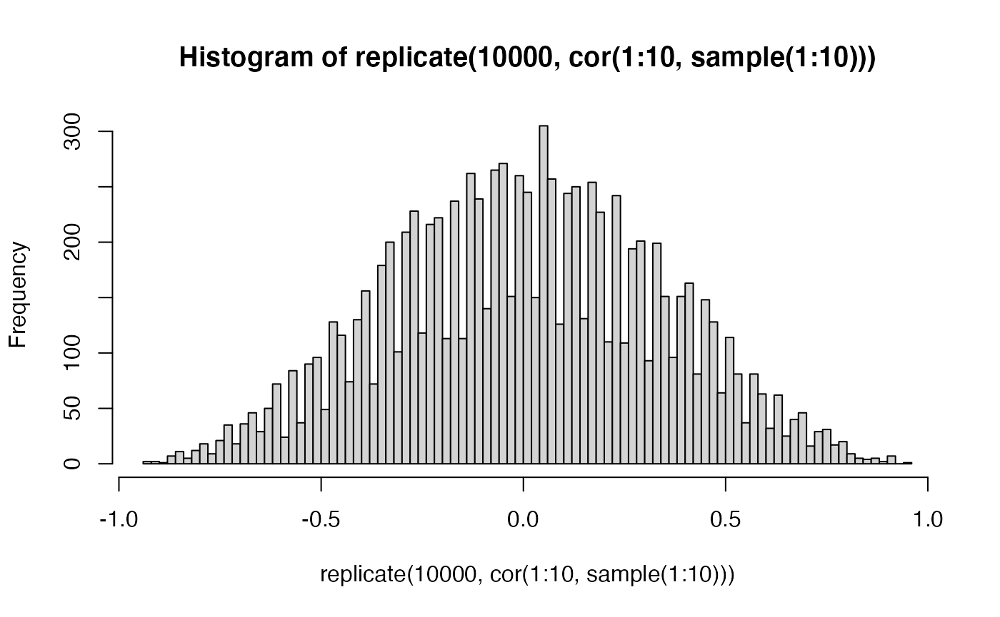

correlation_example
Matt Crump
11/29/2021
Correlation_example.Rmd
some_data <- data.frame(
subjects = 1:12,
texts_per_day = c(10,150,50,300,500,500,65,1000,50,250,175,160),
random_coin = rbinom(12,1,.5),
gender = NA,
age = NA,
distance_from_family = NA,
communication_preference = NA,
how_many_friends = NA,
social_media = c(5,80,1,30,85,55,30,70,80,20,40,99)
)
cor(some_data$texts_per_day,some_data$social_media)## [1] 0.3462239
cor.test(some_data$texts_per_day,some_data$social_media)##
## Pearson's product-moment correlation
##
## data: some_data$texts_per_day and some_data$social_media
## t = 1.167, df = 10, p-value = 0.2703
## alternative hypothesis: true correlation is not equal to 0
## 95 percent confidence interval:
## -0.2841349 0.7676038
## sample estimates:
## cor
## 0.3462239
plot(some_data$texts_per_day,some_data$social_media)
cor(some_data$texts_per_day,some_data$random_coin)## [1] -0.07949929## [,1]
## [1,] 0.391203689
## [2,] -0.141645929
## [3,] -0.172680530
## [4,] 0.010392412
## [5,] 0.567194013
## [6,] -0.253813282
## [7,] -0.002415724
## [8,] 0.566791134
## [9,] -0.523059823
## [10,] -0.074832769
cor(A)## [,1] [,2] [,3] [,4] [,5] [,6]
## [1,] 1.00000000 0.14993396 0.01467085 0.60591607 0.19051855 -0.48093402
## [2,] 0.14993396 1.00000000 -0.36413133 -0.25365178 0.09154040 0.01508232
## [3,] 0.01467085 -0.36413133 1.00000000 0.54907447 -0.49259325 0.29805218
## [4,] 0.60591607 -0.25365178 0.54907447 1.00000000 -0.02130492 -0.38383145
## [5,] 0.19051855 0.09154040 -0.49259325 -0.02130492 1.00000000 -0.24897729
## [6,] -0.48093402 0.01508232 0.29805218 -0.38383145 -0.24897729 1.00000000
## [7,] -0.14141771 0.21615336 -0.05742331 -0.11381754 -0.38507106 -0.18811653
## [8,] 0.55660148 -0.20542337 0.02352258 0.35241976 0.09964239 -0.20609704
## [9,] 0.13138109 0.53810943 -0.28461208 0.03593759 0.17739037 0.04277856
## [10,] -0.14933471 0.35808451 -0.38794976 -0.39915769 0.07361246 0.09769615
## [,7] [,8] [,9] [,10]
## [1,] -0.14141771 0.55660148 0.13138109 -0.14933471
## [2,] 0.21615336 -0.20542337 0.53810943 0.35808451
## [3,] -0.05742331 0.02352258 -0.28461208 -0.38794976
## [4,] -0.11381754 0.35241976 0.03593759 -0.39915769
## [5,] -0.38507106 0.09964239 0.17739037 0.07361246
## [6,] -0.18811653 -0.20609704 0.04277856 0.09769615
## [7,] 1.00000000 0.40181749 -0.42121590 -0.37364423
## [8,] 0.40181749 1.00000000 -0.45287683 -0.62258104
## [9,] -0.42121590 -0.45287683 1.00000000 0.30816030
## [10,] -0.37364423 -0.62258104 0.30816030 1.00000000## [1] -0.1393939
X <- 1:10
Y <- 1:10
X*Y## [1] 1 4 9 16 25 36 49 64 81 100
sum(X*Y)## [1] 385
X <- 1:10
Y <- 10:1
sum(X*Y)## [1] 220## [1] 333